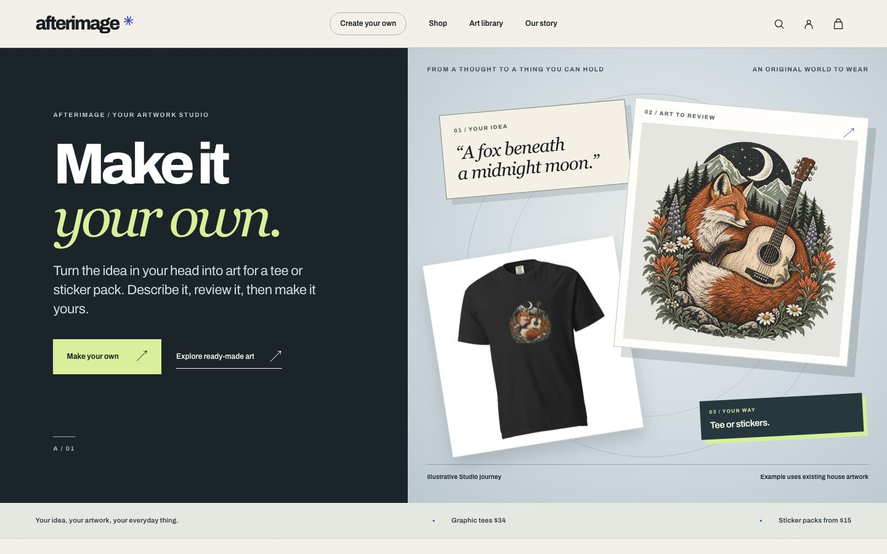
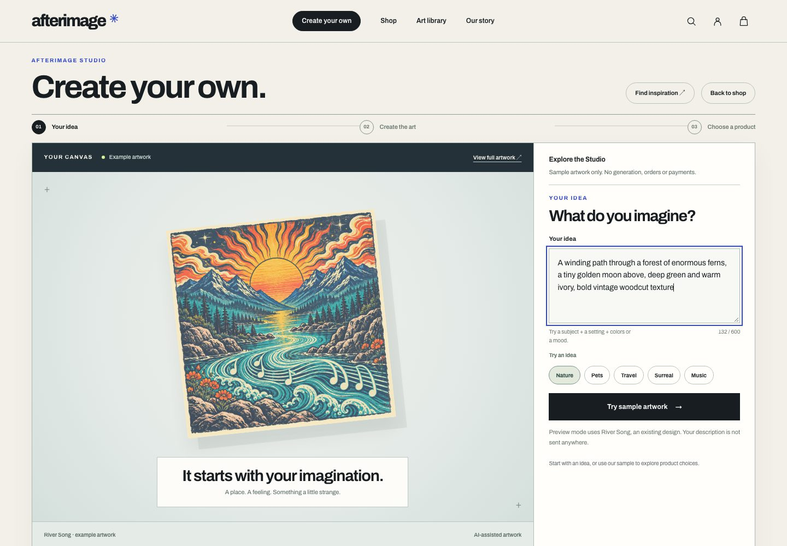
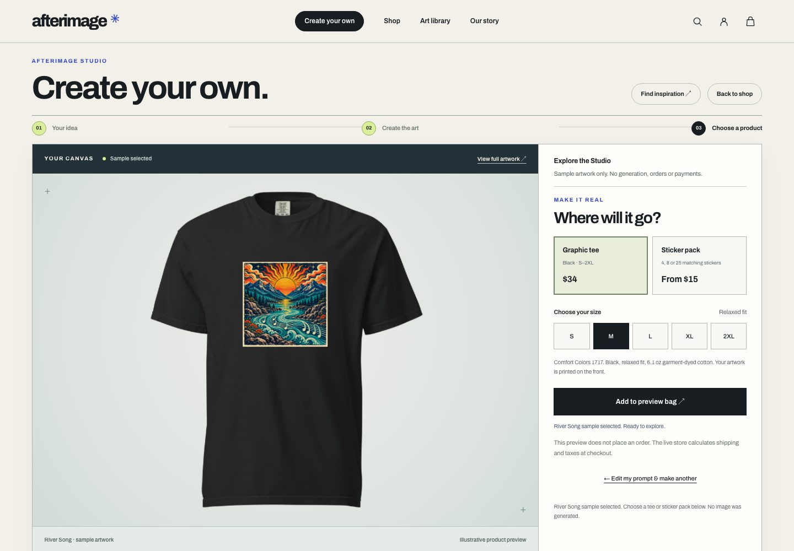
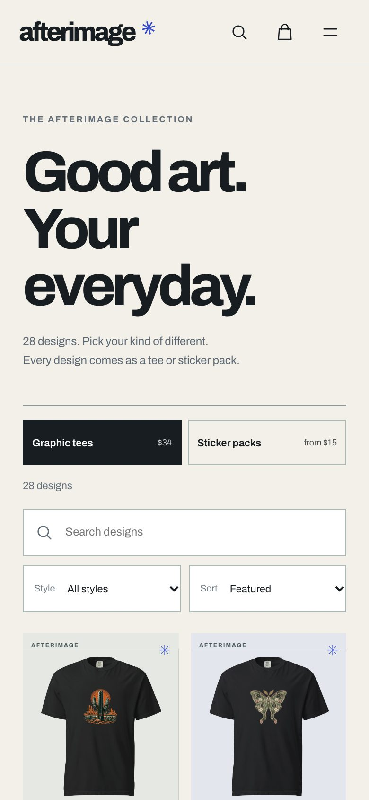
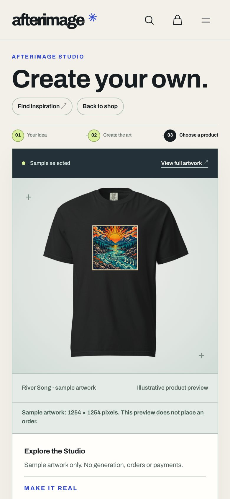

Web appSep 2026
Afterimage — make your own artwork, then put it on a tee or a sticker pack
A print-on-demand art store I run. Customers describe an idea, shape it into artwork in an AI studio, and order it on a tee or a sticker pack; a collection of house designs sits alongside. It is in soft launch on Shopify, and its first paid order, a test purchase of my own, has been printed and delivered. OpenAI’s Codex coding agent wrote most of the code under my direction.
The idea
I didn’t want another anonymous print-on-demand catalog. I wanted a store with its own taste, where what sets it apart is that you can make the art yourself: a desert campsite, an imaginary animal, a scene from a trip. So the Studio leads and the ready-made collection supports it. The limit is taste, not subject, so music, nature, travel and the surreal all fit. The store is also open about how the art is made: it is labelled AI-assisted, product images are marked as illustrations, and the Studio and About pages explain the AI part plainly. The art itself is sold on how it looks.
What it does
- Turns an idea into a brief you can edit. Describe a subject, a place or a feeling; the Studio drafts a visual brief you can review and rewrite before any artwork is made.
- Makes the artwork and keeps it. Finished pieces are saved to your account, open at full size for inspection, and can go on a product now or later. Revising an idea never overwrites what you already made.
- Sells real things. A black garment-dyed tee in five sizes, or packs of 4, 8 or 25 matching 3-inch kiss-cut stickers, printed on demand by Printful. The house designs come the same two ways, with search and filters in the shop and an art library for a closer look.
- Keeps the spending in bounds. A small service I run sits between the store and its suppliers. It holds AI generation to a fixed monthly budget and per-customer allowances, confirms that an order’s artwork belongs to the customer who made it, and rechecks the supplier’s cost before any order is sent.
- Checks the print file before it goes out. After the first sample sticker looked pixelated, I tightened the file checks: new artwork is made at 2048 × 2048, and an order goes to print only if the file is the untouched original and covers the product’s print area without being enlarged.





Screens from the store’s design preview, which uses existing house art as its sample; it generates no images and places no orders.
What it shows
- Knowing what the product is: I picked “make your own” as the one thing that sets the store apart and had the homepage and navigation reworked to lead with it, with the catalog in a supporting role.
- Taking a store to a live soft launch: real suppliers and real payments, behind limits the service enforces on AI and supplier spending.
- Honesty over polish: artwork labelled as AI-assisted, product images labelled as illustrations, and no claim about print quality until a physical sample backs it.
- Directing a coding agent through a week of live releases, with offline checks before each one and no paid test run without my approval.
In soft launch on Shopify; the higher-resolution print files have not yet been checked in a physical sample.